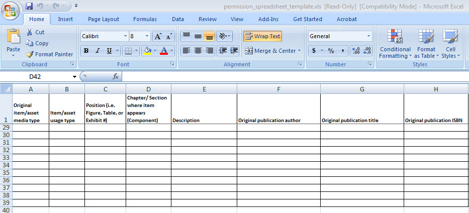

MAIN TABS

SETUP
a. Edit Minimum Permissions Requirements
Use the Setup drop-down menu to edit the minimum permissions requirements and view the uploaded files related to the title.

To edit the minimum requirements, click on Edit Minimum Permissions Requirements. The same wizard will appear as did in step 5.

b. Uploaded Files
If you click Uploaded files, the Product files wizard will appear. This wizard allows you to manage and view all uploaded files related to the product.

Note: Configure author/freelancer access and Assign user roles in GBPM are not discussed in this guide.
CHAPTERS
Use the Chapters drop-down menu to create/edit components, renumber a chapter, merge chapters, or insert a chapter.

a. Create/Edit Components
If you need to create or edit a component click the drop-down option and a Create/edit components wizard will appear. From here you can delete a component by clicking on the Red X or add a single component by naming the component, choosing the category, providing the sort order, and clicking Add. When you are finished, click Close.

b. Renumber an Asset
To renumber an asset, select the renumber option, and a Renumber assets wizard will appear. Select the component that holds the assets you need to renumber.

The next dialogue box will ask you to define the type of asset you are renumbering. Select the type and click Next.

The wizard will then give you the option to type in the new position number. Click Finish when you have entered in the correct position number.

c. Merge Chapters
If you need to merge one chapter with another, click Merge chapters and a Merge Chapters wizard will apear. Choose the chapter to be merged and click Next.

After clicking Next, the wizard will display the asset information located in the chapter to be merged, as well as a field to enter the New Chapter. Under New Chapter, enter the chapter with which the Current Chapter is to be merged, and click Finish.

d. Insert Chapters
To insert a new chapter, click Insert new chapter in the Chapters drop-down menu. The Insert new chapter wizard will appear. This wizard allows you to Insert Between chapters or Add Chapters or appendices at the end. If you would like to insert a chapter in between two chapters, choose the chapter after which the new chapter wil be inserted, and click Insert. The subsequent chapter numbers will also be automatically updated.
If you would like to insert additional chapters at the end, select the box, and provide a range of numbers. The range will automatically be filled in with five additional chapters or appendices.Once you have taylored the range to fit your needs, click Add, and the chapters or appendices will be added.

IMPORTS
The Imports tab allows you to copy assets from a previous edition, copy assets from another project, or import assets from a spreadsheet.

a. Copy Assets from Previous Edition
To copy an asset from a previous edition of the book, simply click the option in the Imports drop-down menu. If the book does not have a previous edition, the option will be unavailable, however, if a previous edition is avaible, follow the Copy assets from a previous edition wizard.
b. Copy Assets from Another Project
To copy assets from another project, click the option, and enter the ISBN of the project you wish to copy assets from. After you click Search, product search results will appear below the ISBN search field. If the title you desire appears, click on the title. Clicking on the title will take you to a list of assets you can copy.

c. Import Assets from a Spreadsheet
If you wish to import assets from a spreadsheet, download the spreadsheet from the Import assets wizard. After you complete the spreadsheet, browse your files and upload the spreadsheet. Click Go to complete the upload.

The downloaded spreadsheet has predefined columns. Make sure to enter only the appropriate information in a specified column.

EXPORTS
The Exports tab allows you to access information relating to a project in various ways, as well run general reports. Exports currently offers a credit lines export, photo research list, source summary report, project detail report, photo department by copyright year report, and photo editor status report.
Note: Expect to see more report offerings as this system develops further.

a. Credit Lines Export
To get a collated and organized list of the credit lines for a project, click Credit lines export in the Views drop-down menu. This will result in an excel sheet that gives the description, page number, figure number, component, usage, caption, photo position, and credit line for each asset.

b. Assets to Production List
The Assets to Production List details a project's assets and the status of those assets, as well as some project details such as the title and ISBN. This report is exported as a PDF.

c. Source Summary Report
The Source summary report lists the sources associated with a project, as well as the assets associated with each source. This report not only lists sources and their assets, but also the cost of those assets. This is a streamlined version of the Project detail report.

d. Project Detail Report
The Project detail report details everything about a project. This report pulls not only details about assets and sources, but also details that would generally appear in GBPM, such as author name, ISBN, medium, edition, product line, copyright year, etc. This report is exported as an excel sheet.

e. Photo Department by Copyright Year Report
Note: The following reports are intended for use by photo department managers.
The Photo department by copyright year report provides a photo department manager a complete list of titles that include photos, organized by year. This report gives the manager the editor and author information for any title that contains a photo for a particular year. After clicking the Photo department by copyright year report option in the Exports drop-down menu, a wizard will appear. Simply enter in your desired year. This report is exported as an excel sheet.

f. Photo Editor Status Report
The Photo edtior status report gives you similar information as the Photo department by copyright year report, however, the information is organized by photo editor. To retrieve a report by editor, click Photo editor status report in the Exports drop-down menu, and choose an editor. Every photo editor who is set up in CORE will appear in this drop-down menu. This report is exported as an excel sheet.

VIEWS
The Views tab provides you with project management information, as well as the ability to search every asset entered within the system.

a. Asset Summary, Estimates, Schedules
This dialogue box allows you to view the total assets within a project by media type, estimate the cost of assets, and monitor the progress and due dates associated with assets. To edit any of the information, click the pencil icon. This option is best used to quickly find information on the status of assets, as well as to project the cost of attaining assets.

c. Advanced Asset Search
To search for an asset using various criteria, click the Advanced asset search option in the Views drop-down menu. This search allows you search assets in the current project or in multiple projects. Simply click the button relating to the parameters you want to search. After setting your parameters, search an asset by entering in your desired criteria.

Once you enter in the criteria and click Search, a list of results will appear. You have the option to export the details of the results to an excel sheet, do another search if the results do not fit your needs, or return to the project details.

To add the asset or update the asset, click on the description link. To Add the asset click Save. To Edit an asset, input the new information and click Save. The asset or the updates will be automatically added to the list of assets on the project landing page in section 4.

MANAGE SOURCES
The Manage sources tab allows you to create new sources or manage sources that have already been input into the system.

a. Create New Source
To create a new source, choose the option from the Manage sources drop-down menu, and a Create New Source wizard will appear. To create a new source, enter in all pertinent information, such as name, country, phone number, JDE Vendor number, main address, and primary contact. Once this information has been added, click Create. The source will then be added to the list of sources within the system.

b. Manage Sources
To manage a source, click the option from the Manage sources drop-down menu. The following dialogue box will list every source within the permissions system. You can search the sources by entering a name in the search field, or you can filter your results by manipulating the name, address, or country. Once you have found the source you want to manage, click the pencil icon.
Note: If a source has been disabled you will not be able to select it. You will be able to search for a disabled source, however, a warning will appear saying not to use the source. Sources can only be disabled by an administrator.

Clicking the pencil icon will take you the source's information page. From this page, you can edit, add, or delete information related to that source.
Quick Tip: Pencil icon = Edit, Plus page icon = Add, Red X = Delete